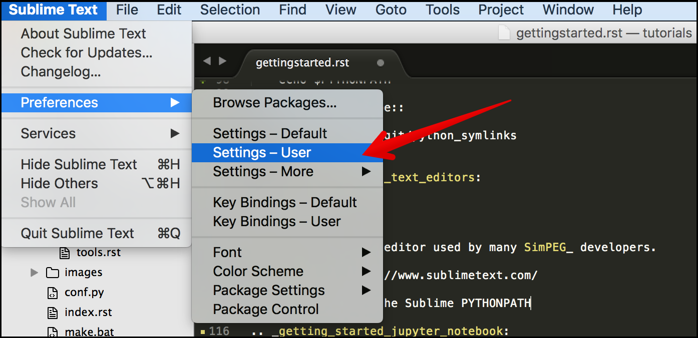
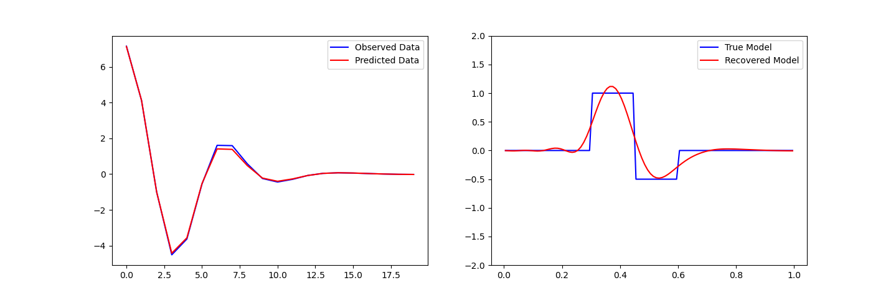

Getting Started: for Developers#
Purpose: To download and set up your environment for using and developing within SimPEG.
Installing Python#
SimPEG is written in Python! To install and maintain your Python environment, Anaconda is a package manager that you can use. If you and Python are not yet acquainted, we highly recommend checking out Software Carpentry.
Working with Git and GitHub#

To keep track of your code changes and contribute back to SimPEG, you will need a github account and fork the SimPEG repository (How to fork a repo). Software
Next, clone your fork so that you have a local copy. We recommend setting up a
directory called git in your home directory to put your version-
controlled repositories. There are two ways you can clone a repository: (1)
from a terminal (checkout: https://docs.github.com/en/get-started/quickstart/set-up-git for an tutorial):
git clone https://github.com/YOUR-USERNAME/SimPEG
or (2) using a desktop client such as SourceTree.

If this is your first time managing a github repository through SourceTree, it is also handy to set up the remote account so it remembers your github user name and password

For managing your copy of SimPEG and contributing back to the main repository, have a look at the article: A successful git branching model
Setting up your environment#
So that you can access SimPEG from anywhere on your computer, you need to add
it to your path. This can be done using symlinks. In your git directory,
create a directory called python_symlinks.
{kind=link}
Open a terminal in this directory and create a symlink for SimPEG
ln -s ../SimPEG/SimPEG .
Then, in your shell, you need to add a PYTHONPATH variable. For Mac and
Linux, if you are using Z shell (Oh My Zsh is used by a
lot of SimPEG developers) or bash open the config in a text editor, ie:
nano ~/.zshrc
or:
nano ~/.bash_profile
and add a PYTHONPATH variable:
export PYTHONPATH="$PYTHONPATH:/Users/USER/git/python_symlinks"
and save and close. If you then restart the terminal, and run:
echo $PYTHONPATH
the output should be:
/Users/USER/git/python_symlinks
Text Editors#
Sublime is a text editor used by many SimPEG developers.
You can configure the Sublime so that you can use the sublime build (Tools / Build) to run Python code.
Open your user settings
{kind=link}
and edit them to include the path to your python_symlinks:
{
"added_words":
[
"electromagnetics"
],
"ensure_newline_at_eof_on_save": true,
"extra_paths":
[
"/Users/USER/git/python_symlinks/"
],
"font_size": 11,
"ignored_packages":
[
"Vintage"
],
"translate_tabs_to_spaces": true,
"trim_trailing_white_space_on_save": true,
"word_wrap": false
}
There are a few other things configured here. In particular you will want to
ensure that "translate_tabs_to_spaces": true is configured (Python is
sensitive to tabs and spaces), that
"trim_trailing_white_space_on_save": true so that your git flow does
not get cluttered with extra spaces that are not actually changes to code and
that "ensure_newline_at_eof_on_save": true, so that there is a blank
line at the end of all saved documents. The rest are up to you.
Jupyter Notebook#

The SimPEG team loves the Jupyter notebook. It is an interactive development environment. It is installed it you used Anaconda and can be launched from a terminal using:
jupyter notebook
If all is well …#
You should be able to open a terminal within SimPEG/tutorials and run an example, ie.:
python 02-linear_inversion/plot_inv_1_inversion_lsq.py
or you can download and run the notebook from the docs.
You are now set up to SimPEG!
If all is not well …#
Submit an issue
Advanced: Installing Solvers#
Pardiso is a direct solvers that can be used for solving large(ish) linear systems of equations. To install, follow the instructions to download and install pymatsolver.
If you open a Jupyter notebook and are able to run:
from pymatsolver import Pardiso
then you have succeeded! Otherwise, make an issue in pymatsolver.